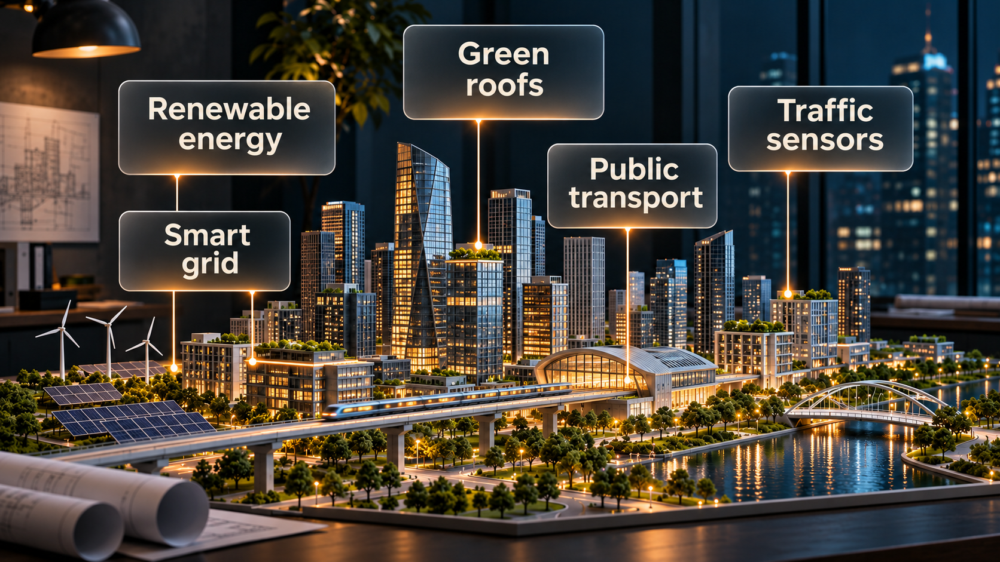
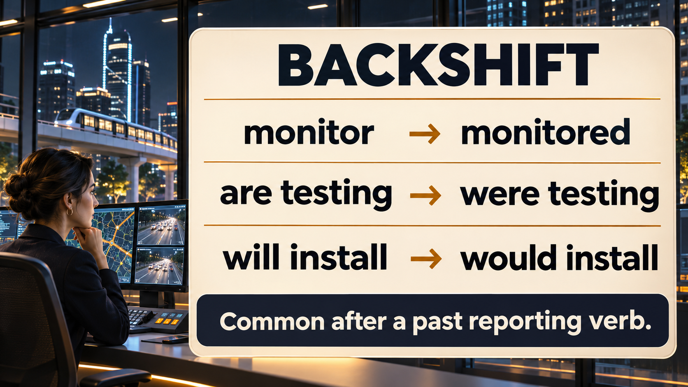
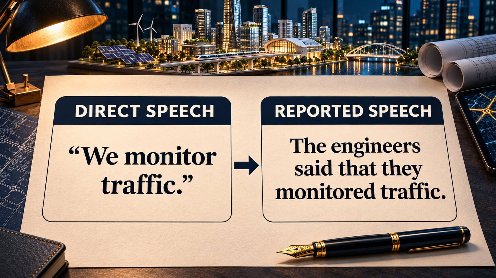
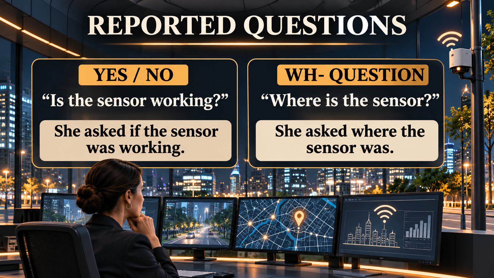
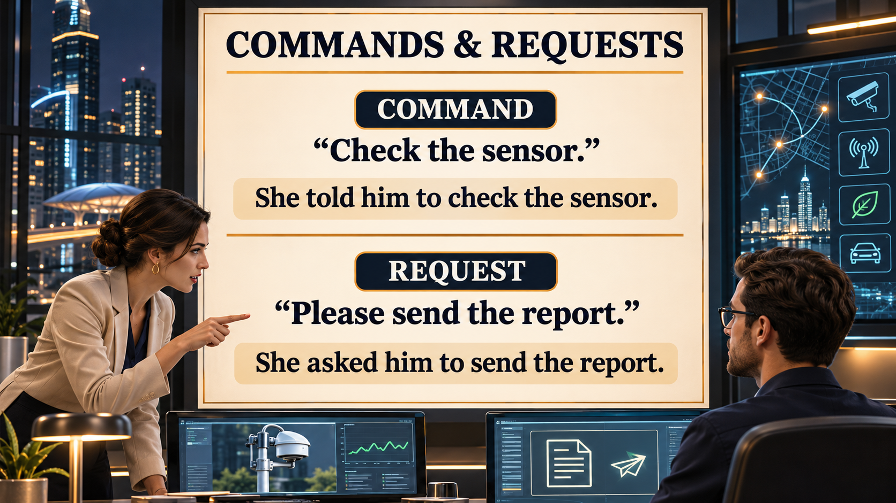
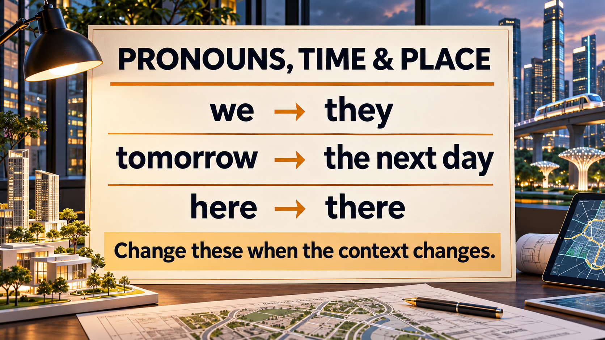
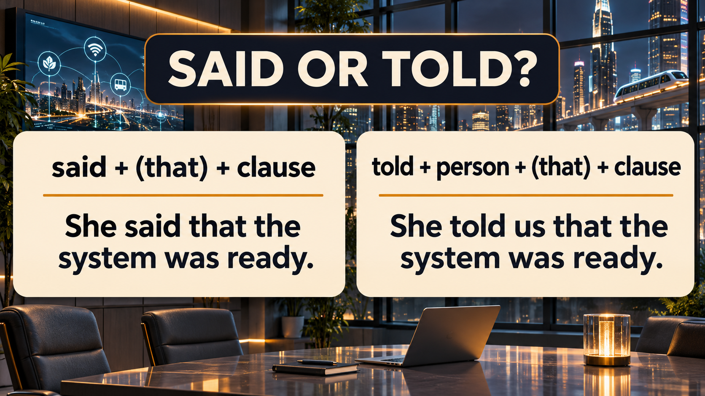
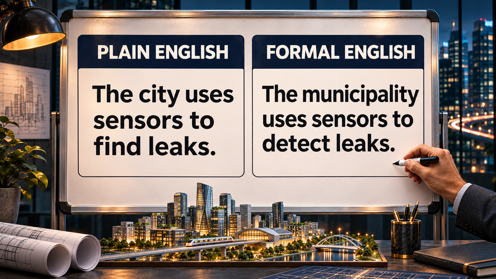
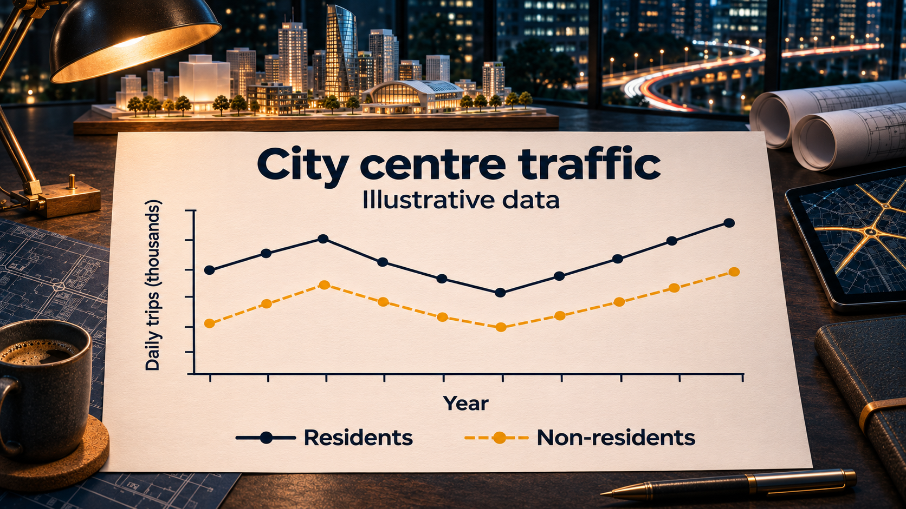
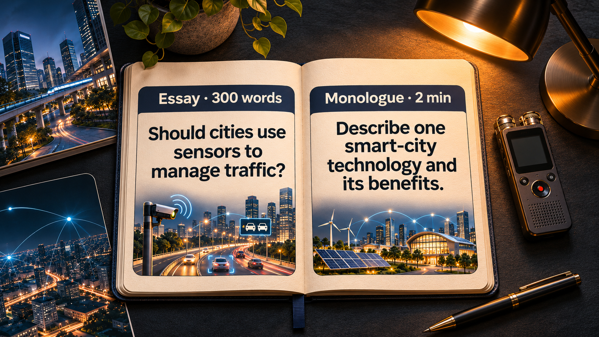

Hello, Andrew. Today's lesson is built around one topic (Smart Cities) and one grammar engine (Reported Speech, C1 level per Hewings' Advanced Grammar in Use). The theme feeds every exam task: an IELTS academic reading, a TOEFL lecture, an IELTS Task 2 essay, a TOEFL Integrated response, and six speaking prompts across both exams. The grammar is the skeleton — every drill forces at least one reporting verb from the extended C1 inventory: claim, allege, maintain, assert, deny, concede, warn against, urge, recommend that, insist on, concede that.
Ten definitions you must be able to produce verbatim + a C1 collocation shelf. Flip the card, say the definition aloud, then build one original sentence pairing the term with a reporting verb (the authors claim that…, the researchers concede that…).
Tap a card to flip · say the definition aloud · build one C1 sentence

Click the capsule you think fits. Nothing shows right or wrong until you press Check.
Deploy at least four Block 01 terms per answer. Record yourself before revealing framings.
Format: 1 opinion + 2 reasons + 1 hedge.
20-40 seconds per answer, 2-3 sentences, short & personal. Deploy Block 01 vocab at least once.
Target structure: I think / in my opinion / yes, because / no, because.
Audio-first 3 parts. Part A: play the story and answer five pre-reading questions BEFORE you see the text. Part B: reveal text + T/F/NS. Part C: cloze.
Listen once. Answer from the audio alone — the text is still hidden.
Click a capsule per gap. One correct answer per row.
Both tasks force you to report the passage you just read using the inventory from §05 (claim, concede, maintain, warn).
Target: one concession + one re-frame + at least one reporting verb.
Format: 1 opener + 3 concerns + 1 author stance line.
Academic IELTS-style passage · 10 paragraphs · answer the summary completion (1-5), the short-answer questions (6-9), then meet the reporting verbs that appear in the lecture (s07).
A. The concept of the “smart city” has undergone significant transformation since its inception in the early 2000s. Initially focused primarily on technological integration, the first wave of smart-city initiatives concentrated on implementing digital solutions to enhance efficiency in urban operations. City administrators worldwide invested in sensor networks, data-analytics platforms, and centralised monitoring systems, assuming that technology alone would solve complex urban challenges. However, these early approaches often resulted in fragmented systems that failed to address the interconnected nature of urban problems — the technological infrastructure frequently operated in isolation, creating “digital islands” rather than cohesive ecosystems.
B. Contemporary smart-city frameworks have evolved to embrace a more citizen-centric philosophy. Rather than viewing technology as an end in itself, modern approaches consider it an enabler for improving quality of life, sustainability, and social inclusion. The most successful smart-city initiatives now incorporate extensive community-engagement processes. Barcelona's urban-innovation programme actively involves residents in identifying neighbourhood challenges before deploying technological solutions, while Seoul's Smart City platform emphasises accessibility for elderly and disabled populations who might otherwise be excluded from digital advancement.
C. One of the most promising developments has been the integration of sustainable infrastructure with digital capabilities — often termed green-digital convergence. Modern smart water-management systems exemplify this approach, combining IoT sensors, advanced analytics, and renewable energy to optimise water distribution while minimising ecological impact. In Amsterdam, intelligent street lighting adjusts brightness based on pedestrian presence while collecting environmental data, demonstrating how single infrastructure elements can serve multiple functions.
D. The connectivity backbone of smart cities has similarly advanced. Fifth-generation (5G) cellular networks provide the high bandwidth and low latency necessary for real-time applications such as autonomous transportation systems. Meanwhile, low-power wide-area networks (LPWAN) support the massive deployment of sensors requiring minimal energy. This diversified connectivity architecture enables more sophisticated applications while improving resilience against network failures.
E. The evolution of data-management frameworks represents another crucial dimension. Early implementations typically utilised proprietary data platforms with limited interoperability, creating significant barriers to integration across different urban systems. Cities like Helsinki and Copenhagen have established unified data platforms that aggregate information from diverse sources while maintaining strict privacy protections.
F. Transportation infrastructure has been particularly transformed. The traditional focus on maximising vehicle throughput has given way to mobility ecosystems designed around accessibility, sustainability, and efficiency. In Singapore, the centralised mobility platform integrates payment systems, real-time scheduling, and predictive maintenance across all transportation modes.
G. Energy infrastructure has undergone perhaps the most dramatic transformation. Contemporary approaches encompass comprehensive energy ecosystems that integrate distributed renewable generation, advanced storage, demand-response capabilities, and predictive analytics. Buildings now function not just as consumers but also as producers and storage points within the broader network.
H. Significant challenges remain. Cybersecurity vulnerabilities have multiplied as urban systems become more interconnected. Privacy concerns have intensified as surveillance capabilities expand through sensor networks and data analytics. Moreover, the digital divide threatens to exacerbate existing social inequalities if technological benefits accrue primarily to privileged populations. Toronto's Quayside project established explicit digital-rights principles before deploying new technologies, while Vienna's smart-city strategy incorporates specific metrics for digital inclusion.
I. Financial sustainability presents another persistent challenge. Many early smart-city projects relied heavily on grant funding or vendor financing, creating difficulties in transitioning to sustainable operational models. More mature approaches now emphasise business models that distribute costs and benefits across multiple stakeholders through public-private partnerships, leveraging private-sector expertise and capital while maintaining public oversight of essential services.
J. Looking forward, the most promising direction lies in adaptive systems capable of evolution in response to changing conditions. Leading cities are creating digital infrastructures designed for continuous learning and adjustment. The smart cities of tomorrow will likely be distinguished not by the quantity of their technology but by the quality of their learning processes and their ability to harmonise digital capabilities with human and ecological needs.
Each gap has one correct option from the passage. Key hidden until Check.
Use the passage's own paragraph labels (A-J) as citation anchors (Paragraph H argues that…) — a C1 move that picks up Band 8 fluency.
Full C1 apparatus: backshift rules + modal backshift + reporting verbs beyond say/tell + reported questions + reported commands + time & place shifts + hedging verbs (claim/allege/maintain) + common C1 traps.


| Direct form | Reported form | Example |
|---|---|---|
| Present simple | Past simple | “Sensors monitor air quality.” → She said sensors monitored air quality. |
| Present continuous | Past continuous | “The city is deploying 5G.” → He said the city was deploying 5G. |
| Present perfect | Past perfect | “We have reduced emissions.” → They said they had reduced emissions. |
| Past simple | Past perfect (often) | “The pilot failed in 2019.” → The report said the pilot had failed in 2019. |
| Past continuous | Past perfect continuous | “Citizens were complaining.” → She said citizens had been complaining. |
| will | would | “5G will replace 4G.” → He said 5G would replace 4G. |
| can | could | “We can predict congestion.” → The analyst said they could predict congestion. |
| may | might | “The system may fail.” → She warned the system might fail. |
| must (obligation) | had to | “We must upgrade.” → The mayor said they had to upgrade. |
Every modal has three readings — obligation / possibility / deduction. The shift depends on the reading, not on the surface word.
| Direct modal | Reading | Reported form | Example |
|---|---|---|---|
| will | future | would | “We will deploy sensors.” → He said they would deploy sensors. |
| can | ability | could | “We can predict congestion.” → She said they could predict congestion. |
| can | permission | could / was allowed to | “You can enter.” → The guard said I could enter. |
| may | possibility | might | “It may fail.” → She warned it might fail. |
| may | permission | might / was allowed to | “You may leave.” → He said I might leave. |
| must | obligation | had to | “We must upgrade.” → The mayor said they had to upgrade. |
| must | deduction | must (no shift) | “He must be exhausted.” → She said he must be exhausted. |
| mustn't | prohibition | mustn't (no shift) | “You mustn't touch it.” → He said I mustn't touch it. |
| shall | offer / suggestion | should | “Shall we start?” → She asked if we should start. |
| shall | strong future | would | “We shall overcome.” → He said we would overcome. |
| needn't | no necessity | didn't need to / didn't have to | “You needn't wait.” → She said I didn't need to wait. |
| would / could / should / might / ought to | already modal-fixed | no shift | “We should pilot it.” → She said we should pilot it. |
| used to | past habit | used to (no shift) | “I used to live there.” → He said he used to live there. |
| had better | strong advice | had better (no shift) | “You had better leave.” → She said I had better leave. |
Two impersonal patterns that lift any report into formal academic / IELTS Writing register. Memorise them by shape, not by gloss.
| Pattern | Use | Example |
|---|---|---|
| It is said that + clause | no named source, present belief | It is said that smart cities will reduce congestion. |
| It is believed / thought / claimed / reported / alleged / rumoured that + clause | varying hedge strength | It is alleged that the vendor mishandled personal data. |
| It was said / believed that + past clause | past belief | It was believed that the early pilots had failed because of weak governance. |
| Subject + is said / thought / believed + to-inf (present) | attribute a quality to a specific subject | Barcelona is said to be the archetypal smart city. |
| Subject + is said / thought + to have + V3 (past) | attribute a past action | The vendor is alleged to have shared data with third parties. |
| Subject + was said + to-inf | past belief about a quality | The 2015 pilot was believed to be a template for later deployments. |
Instead of a reporting verb, use the matching noun + that-clause (or of + V-ing). This is how academic prose packages reported content.
| Reporting verb | Matching noun | Pattern | Example |
|---|---|---|---|
| claim | claim | the claim that + clause | The claim that smart cities are privacy-neutral does not survive scrutiny. |
| allege | allegation | the allegation that + clause | The allegation that the vendor sold data was never substantiated. |
| assert / maintain | assertion | the assertion that + clause | The assertion that automation always reduces costs ignores training. |
| suggest | suggestion | the suggestion that + clause | The suggestion that the city (should) delay the rollout came from auditors. |
| recommend | recommendation | the recommendation that + clause | The recommendation that every pilot (should) be audited quarterly is uncontroversial. |
| argue | argument | the argument that + clause | The argument that privacy and innovation are incompatible is a false dichotomy. |
| concede | concession | the concession that + clause | The concession that early pilots had failed was long overdue. |
| deny | denial | the denial of + V-ing / that + clause | The denial that any data had been exported collapsed under audit. |
| insist | insistence | her insistence on + V-ing / that + clause | Her insistence on transparency protected the project. |
| admit | admission | the admission that + clause | His admission that the model had flaws disarmed the room. |
| propose | proposal | the proposal that + clause | The proposal that funding (should) be doubled was rejected. |
| imply / hint | implication | the implication that + clause | The implication that oversight was weak was not lost on the audit committee. |
Short, high-register way to carry the speaker's stance. Pattern: be + adjective + that-clause. Many of these do NOT trigger backshift because the adjective is already stance-marked.
| Adjective | Stance | Example |
|---|---|---|
| adamant that | uncompromising conviction | The CEO was adamant that no personal data was retained. |
| insistent that | repeated assertion | Auditors were insistent that logs (should) be public. |
| convinced that | strong belief | Engineers were convinced that the leak was a configuration error. |
| certain that | high confidence | Analysts were certain that the rollout would miss its deadline. |
| aware that | knowledge | The council was aware that the project carried reputational risk. |
| conscious that | deliberate awareness | The designers were conscious that inclusion would have to be built in. |
| optimistic / pessimistic that | stance toward outcome | Residents were optimistic that the pilot would reduce congestion. |
| sceptical that | doubt | Regulators were sceptical that the vendor had tested edge cases. |
| worried / concerned that | anxiety | Residents were concerned that their data might be shared. |
| anxious that | pressing worry | The mayor was anxious that the rollout (should) succeed before elections. |
For each sentence, rewrite in BOTH passive patterns: (a) It is said / believed / alleged that…, (b) Subject + is said / believed + to-inf.
Convert the reporting verb into the matching noun + that-clause (the claim that…).
Replace the reporting verb with was / were + adjective + that-clause. Keep the information intact.
Rewrite each direct question as reported. Yes/no → if / whether; wh- → keep the wh-word; no auxiliary do, no inversion, no question mark.
Every sentence contains ONE C1 reported-speech mistake (trap 1-5 or a modal-shift error). Rewrite the full sentence correctly.
For each verb, pick the ONE grammatical pattern that follows it. Patterns from §2 inventory.
Rewrite each mini-dialogue as a single reported narrative paragraph. Use at least three different reporting verbs per dialogue. Backshift fully.
Waiter: “We don't have any oat milk today. I promise to bring you the regular latte in two minutes.”
Customer: “Will you take the price off the bill?”
Waiter: “Sorry, I can't — it's against the rules.”
Anna: “Let's go hiking on Saturday — the weather will be perfect.”
Max: “Why don't we just stay in and watch a film?”
Anna: “We can't stay in every weekend — we already did that last time.”
Patient: “How many tablets should I take a day?”
Doctor: “Two in the morning, one at night. Don't skip the evening one.”
Patient: “Can I drink coffee with them?”
Doctor: “Please avoid coffee for the first week. You mustn't mix it with the medicine.”
Given the reported sentence, reconstruct the probable direct quote. Multiple valid answers exist — one typical answer is scored.
Standard B2 version → C1 preferred version.
For each sentence pick whether that can be dropped (common verbs) or must stay (formal / “voice” verbs).
Rewrite each reported question as the compact wh- + to-inf form.
After triggers (essential / suggest / demand / recommend / insist / anxious / preferable) use the BASE form. Pick it.
Each reporting verb below needs an object (a person) before the that-clause. Rewrite with the missing object in brackets.
Read each scenario. Then speak aloud for 30-45 seconds: report what A said to C, choosing a reporting verb that signals the right stance (claim / allege / maintain / concede / warn / admit / promise). Record yourself before revealing the model.
Your friend Anna texts you: “I'll come to the party on Friday, but I can't stay late — I have to catch the first train.” Now report this to your girlfriend.
Your neighbour says: “Three people at the building meeting told me the lift broke down twice last week.” Now report this to the building manager.
At a family dinner, your dad says: “We must cancel the holiday — your grandma is unwell. We can rebook it next spring.” Report this to your siblings in the group chat.
Your flatmate says: “I told the landlord in September that the boiler was leaking. He told me not to worry about it.” Report it to the housing office.
A classmate writes in the group chat: “Why doesn't the teacher tell us what's going to be on the exam?” Report this complaint in a polite email to the teacher.
For each situation, pick the reporting verb that carries the right stance (claim = neutral hedge; allege = unproven accusation; maintain = holding a position under pressure; concede = reluctant admission; admit = outright admission). Read the full reported sentence aloud.
After scoring, say each full sentence aloud using your chosen verb (“The whistleblowers alleged that…”).
20-30 seconds per answer. Each prompt is a surface IELTS P1 question but it forces a reported-speech opening.
This is the C1 move that differentiates a Band 6 paraphrase from a Band 8 one. Each verb carries its own pattern — memorise the pattern, not the gloss.
| Verb | Pattern | Example |
|---|---|---|
| admit | + (that) / + V-ing | She admitted (that) the pilot had failed. / She admitted failing. |
| deny | + V-ing / + (that) | The vendor denied collecting personal data. |
| agree | + to inf / + (that) | The council agreed to install new sensors. |
| refuse | + to inf | Citizens refused to share biometric data. |
| promise | + to inf / + (that) | The mayor promised to narrow the digital divide. |
| offer | + to inf | The contractor offered to subsidise fibre deployment. |
| threaten | + to inf | Opponents threatened to block the project. |
| warn | sb against + V-ing / sb (not) to inf | Experts warned the city against rushing the rollout. |
| accuse | sb of + V-ing | Campaigners accused the vendor of mishandling data. |
| blame | sb for + V-ing | Critics blamed the council for ignoring privacy audits. |
| apologise | for + V-ing | The vendor apologised for leaking personal records. |
| insist | on + V-ing / + (that) sb (should) inf | The auditor insisted on reviewing every log. |
| suggest | + V-ing / + (that) sb (should) inf · NOT sb to inf | The analyst suggested piloting the system first. / She suggested that we (should) pilot. |
| recommend | + V-ing / + (that) sb (should) inf | The committee recommended that the city (should) delay the rollout. |
| propose | + V-ing / + (that) sb (should) inf | The mayor proposed that funding (should) be doubled. |
| urge | sb to inf | Regulators urged the firm to disclose its algorithms. |
| remind | sb to inf / sb that | The chair reminded members to vote by Friday. |
| claim | + (that) / + to inf | The vendor claimed its sensors were anonymous. / The vendor claimed to have anonymised every record. |
| allege | + (that) | The journalist alleged that the vendor had misled regulators. |
| maintain / assert | + (that) | The CEO maintained that the data was secure. |
| concede | + (that) | The council conceded that early pilots had failed. |
| imply / hint | + (that) | The report implied that oversight was weak. |



| Direct | Reported |
|---|---|
| now | then / at that time |
| today | that day |
| yesterday | the previous day / the day before |
| tomorrow | the next day / the following day |
| this week / month / year | that week / month / year |
| next week / month | the following week / month |
| last week / month | the previous week / month |
| ago | before / previously |
| here | there |
| this / these | that / those |

Rewrite each direct quote using the reporting verb in bold. Backshift fully unless Hewings Rule 1 applies.
Goal: connect two reported sentences with a linker (she also added that… / and she went on to say that…).
Trick: stress the reporting verb ('She DENIED…') so the hedge is audible.
Every answer must use at least five reporting verbs from the inventory in card §2 (not only say/tell).
You should say:
Five transformations that upgrade a flat sentence to a Band 8 / 25+ TOEFL one: formal conditionals (Were / Should), mandative subjunctive, negative inversion, cleft sentences, and the four suggest patterns.

Each answer must land at least three of: Were… / Should… / Rarely… / Not only… / No sooner… / It is essential that… / What… is… / It was… that…
You should say:
Play once, take notes, then answer 5 MCQ + 5 summary gap-fill using reported-speech frames (the lecturer explained that…).
Click the capsule for each gap. Key hidden until Check.
This is the exam move the whole lesson has been building toward: re-tell the lecture using reported speech. Minimum four reporting verbs from §05 inventory.
Format: 1 opener (what the lecture is about) + 2 benefits + 2 concerns + 1 recommendation.
Three writing moves on one theme. Task 1 shows how to describe a city-traffic graph at Band 8. Task 2 is your essay. The Integrated response is where reported speech earns its exam keep.

The graph shows the number of car journeys into the city centre made by residents and non-residents over a ten-year period. In 1996 an average of just under 10,000 journeys per day were being made by residents, while approximately half that number were made by non-residents. Over the subsequent three years, resident journeys remained reasonably stable, while non-resident journeys increased each year, exceeding 8,000 per day in 1999.
In early 2000, parking meters were introduced into the city centre, and this had the effect of virtually halving resident traffic, although non-resident traffic decreased only slightly. By the end of 2002, the number of resident journeys had not altered significantly, but non-resident journeys had risen to their 1999 level. At this point, Westgate Street and Park Lane were pedestrianised. This resulted in a dramatic decline in non-resident traffic, and a slight decrease in resident traffic. From this point onward, resident traffic remained more or less at the same level, while non-resident traffic resumed its upward trend, reaching nearly 5,000 journeys per day in 2005.
Some people believe that smart cities will greatly improve quality of life. Others argue that they will create new social and ethical problems. Discuss both views and give your own opinion.
Summarise the Reading B passage (section 04) against the lecture (section 07). The whole structure is reported speech. Use at least three different reporting verbs from section 05.
Once you've drafted the essay, deliver it in two faster oral formats. Same content, tighter delivery, no reading.
You should say:
One cue card, five Part 3 follow-ups, one TOEFL opinion prompt. Every answer must include at least one reporting verb (the mayor claimed, the lecturer argued, the researcher conceded).
You should say:
Format: 1 min prep + 1-2 min monologue.
Format: 1 clear opinion + 2 reasons + 1 concession + 1 close.
Two deliverables and a self-check. Return next lesson with both artefacts.
